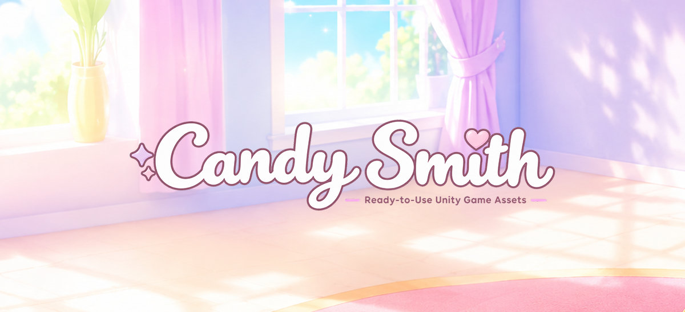

Candy Smith is a small team of developers with years of experience in the game industry. We know firsthand how challenging it is to start a new project from scratch.
That is why we brought the idea of complete, ready-to-use game projects to the Unity Asset Store, becoming one of the early publishers focused on this approach.
Our goal is simple: help you start building your game today instead of spending months or years creating the foundation from zero.
Our assets include core gameplay, powerful editors, progression and social systems, advertising integrations, ready-made content, detailed documentation, and full source code. We also provide regular updates and fast support to help you move your project forward.